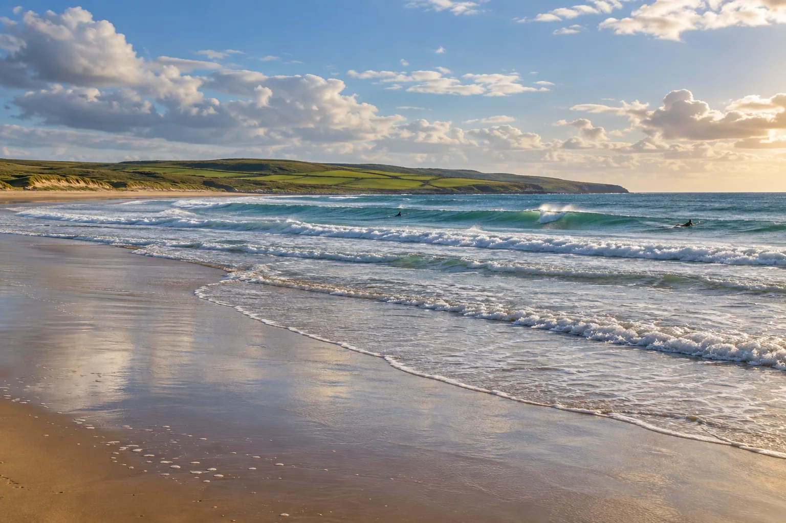

Lahinch
Comté de Clare, Irlande · surf, bodyboard

Ville de surf de la côte ouest irlandaise, près des falaises de Moher. Le beach break accueille les débutants, les reefs voisins les experts.
- Lieu
- Comté de Clare, Irlande
- Niveau
- Débutant
- Activités
- surf, bodyboard
- Type d'eau
- Mer / océan
- Coordonnées
- 52.93, -9.35 (position approximative du secteur)
Dangers à connaître
- Eau froide toute l’année.
- Courants à la sortie de la rivière.
Le conseil d'Ocean Buddy
Pars avec une école locale : les conditions changent vite sur l’Atlantique.
Ouvrir dans Ocean Buddy Télécharger sur l'App Store
Source : Fiche Ocean Buddy · septembre 2026 · à vérifier localement.